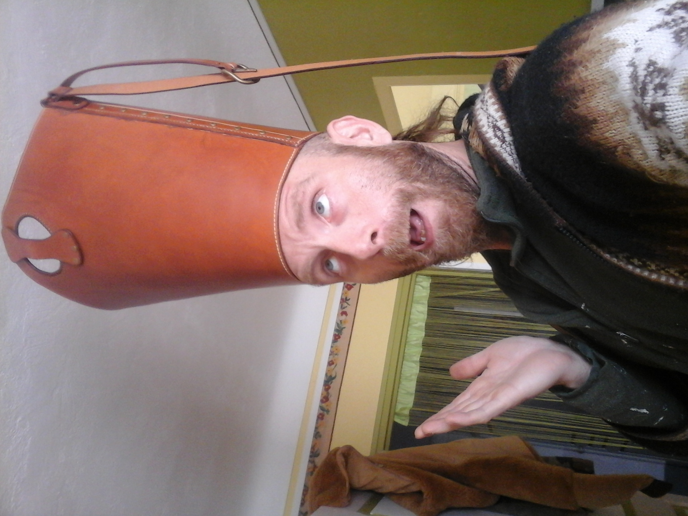

Mon Parcours Créatif
Découvrez mon parcours, mes atouts et mes aspirations professionnelles
Découvrez mon parcours, mes atouts et mes aspirations professionnelles

Designer • Développeur • Artisan • En recherche d'opportunités
Mon parcours professionnel atypique reflète une évolution constante entre technique et créativité. Après un BTS Informatique & Réseaux (2007), j'ai passé 7 ans comme développeur web et webmaster (2008-2015), tout en développant d'autres compétences (infographie 2D/3D) avant de diversifier mon expérience professionnelle dans différents secteurs. En 2019, j'ai concrétisé ma passion pour l'artisanat en créant "Au Cuir Du Lion", mon entreprise de maroquinerie. Parallèlement, je me suis formé en infographie, rénovation d'intérieur et j'ai obtenu en 2025 une certification professionnelle en Game Design. Aujourd'hui, je recherche des opportunités professionnelles afin de valoriser cette expertise multi-facettes (développement, game design, infographie, artisanat) dans des projets créatifs et techniques stimulants.
Mise en ligne de mes réalisations et projets personnels pour présenter mes compétences.
Obtention d'une certification professionnelle en Game Design : conception de jeux vidéo. Etude marketing, level design, prototypage Unity / Unreal et documentation complète.
Création de "Au Cuir Du Lion" : conception et fabrication d'articles en cuir sur-mesure. Gestion complète de l'activité, vente sur marchés et en ligne.
Période de diversification professionnelle (commerce, production, agriculture, restauration) ayant renforcé et développé ma polyvalence, ma rigueur et mes compétences.
7 années d'expérience en développement web (Web agency, agence immobilière, association, projets divers). Création de sites web, webdesign, intégration front-end et gestion de contenu.
Premier poste technique après l'obtention de mon BTS IRIS (Informatique & Réseaux).
Obtention du BTS IRIS, fondation de mes compétences techniques en développement et systèmes informatiques.
Des compétences variées qui permettent d'aborder les projets sous différents angles créatifs.
Une approche innovante inspirée par le croisement de plusieurs disciplines artistiques.
Toujours en évolution, je me forme régulièrement aux nouvelles techniques et outils.
Capacité à m'intégrer rapidement dans des équipes et à comprendre les besoins spécifiques.
Postes en infographie 2D/3D, game design, programmation ou tout rôle créatif où ma polyvalence serait un atout.
Projets ponctuels en infographie 2D/3D, programmation, conception de jeux, aménagement d'espaces et rénovation.
Partenariats avec d'autres créatifs, studios indépendants ou associations pour des projets innovants.
Création sur-mesure d'accessoires en cuir dans le cadre de mon auto-entreprise.
Que ce soit pour un poste, une mission ou une simple discussion autour d'un projet, je serais ravi d'échanger avec vous !
Me contacter